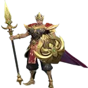

Guia Completo para Jogar de Minotauro em Mobile Legends (MLBB)
O Minotauro é um poderoso tanque em Mobile Legends: Bang Bang, conhecido por sua habilidade de iniciar lutas, controlar inimigos e fornecer cura e proteção para seus aliados. Sua mecânica única de fúria o diferencia de outros heróis, pois ele se transforma em um estado enfurecido, aumentando significativamente suas habilidades. Neste guia, vamos explorar como maximizar o potencial do Minotauro, detalhando cada uma de suas habilidades, os melhores combos, builds de itens, escolhas de emblemas e estratégias para as fases inicial, intermediária e final do jogo.
Detalhamento e Uso das Habilidades do Minotauro
Passiva: Modo Furioso
Efeito: Quando Minotauro aplica um efeito de controle em um herói inimigo com uma habilidade, ele também reduzirá a Defesa Híbrida do inimigo em 5 (+0,5Nível do Herói). Quando Minotauro cura um herói aliado com uma habilidade, ele também aumentará a Defesa Híbrida do aliado em 5 (+0,5Nível do Herói) por 2 segundos. Esses efeitos são dobrados no estado Enfurecido.
Dica de Uso: Aproveite a Modo Furioso do Minotauro, cronometrando cuidadosamente suas habilidades de controle e cura durante as lutas. Quando estiver prestes a engajar ou apoiar, procure ativar suas habilidades de controle de grupo (como derrubadas) em alvos inimigos prioritários, reduzindo sua Defesa Híbrida e tornando-os mais vulneráveis aos ataques do seu time. Da mesma forma, use suas habilidades de cura estrategicamente no meio de uma luta em equipe para aumentar a Defesa Híbrida dos seus aliados. Se estiver prestes a entrar no estado Enfurecido, espere por ele antes de engajar, pois os efeitos passivos são dobrados, amplificando significativamente tanto seu impacto ofensivo quanto defensivo.
Habilidade 1: Pisada do Desespero
Recarga: 12 segundos
Efeito: Minotauro salta para um local alvo, causando dano físico em área e brevemente jogando os inimigos ao ar. Também desacelera os inimigos em 40% e melhora seus ataques básicos por 2 segundos.
Versão Enfurecida: A área de efeito e o dano são significativamente aumentados.
Dica de Uso: Pisada do Desespero é sua principal ferramenta de iniciação e controle de multidão. Em sua forma enfurecida, cobre uma área muito maior, então sempre tente usá-la quando enfurecido para maximizar seu impacto. Você pode usá-la para desorganizar as formações inimigas ou proteger seus carregadores, derrubando inimigos que tentam mergulhar sobre eles.
Habilidade 2: Rugido de Motivação
Recarga: 10 segundos
Efeito: Minotauro cura a si mesmo e heróis aliados próximos, recuperando uma porcentagem de sua HP perdida.
Versão Enfurecida: Quando enfurecido, Minotauro ganha Regeneração Enfurecida, permitindo que ele recupere HP igual a 100% do dano recebido por 2 segundos.
Dica de Uso: Rugido de Motivação é sua ferramenta de sustentação nas lutas, e a cura é inestimável tanto para você quanto para seu time. Use essa habilidade estrategicamente nas lutas em equipe—tente ativá-la quando vários aliados precisarem de cura ou quando você estiver prestes a receber muito dano em seu estado enfurecido para maximizar sua eficácia. Em combinação com itens de cura como o Oráculo, essa habilidade se torna ainda mais poderosa.
Ultimate: Fúria Minoana
Recarga: 60 segundos
Efeito: Minotauro entra em seu Estado Enfurecido e golpeia o chão três vezes, causando dano físico e aplicando desacelerações e derrubadas. O golpe final causa Dano Verdadeiro.
Dica de Uso: Fúria Minoana é uma das melhores ultimates de luta em equipe no jogo devido ao seu controle de multidão em grande área. Guarde-a para momentos chave, quando você puder atingir vários inimigos, especialmente a retaguarda inimiga ou carregadores frágeis. Sempre esteja atento ao controle de multidão inimigo que pode interromper sua ultimate se você não estiver em sua forma enfurecida.
Prós e Contras do Minotauro
Prós:
- Excelente Controle de Multidão: Várias habilidades com derrubadas, desacelerações e uma ultimate devastadora em área fazem do Minotauro um dos melhores tanques de controle de multidão do jogo.
- Alta Sustentação: Sua habilidade de cura pode manter tanto ele quanto seus aliados vivos por mais tempo durante as lutas em equipe.
- Tanque com Boa Escala: Minotauro se torna incrivelmente difícil de matar no final do jogo, especialmente com a devida construção de itens, graças à sua cura e mecânica de fúria.
- Grande Presença em Lutas de Equipe: Em seu estado enfurecido, Minotauro pode influenciar fortemente o resultado das lutas em equipe, muitas vezes sendo a diferença entre vitória e derrota.
Contras:
- Dependente de Fúria: A eficácia do Minotauro cai significativamente quando ele não está enfurecido, então gerenciar sua Fúria é fundamental.
- Vulnerável no Início do Jogo: Carece de forte controle de multidão ou resistência antes de construir itens e ganhar níveis.
- Dependente de Habilidades de Mira: Seu salto e ultimate são habilidades de mira que exigem bom posicionamento e tempo para acertar de forma eficaz.
- Longos Tempos de Recarga: Especialmente no início do jogo, os tempos de recarga do Minotauro podem parecer longos, tornando-o menos eficaz em lutas rápidas.
Combos do Minotauro
Combo 1: Habilidade 1 -> Ataque Básico -> Habilidade 3 (Fúria Minoana Aprimorada) -> Habilidade 2 -> Ataque Básico
Execução: Inicie com Pisada do Desespero para derrubar e desacelerar os inimigos. Siga com um ataque básico antes de lançar Fúria Minoana para desorganizar o time inimigo e causar dano massivo. Termine com Rugido de Motivação para cura e sustentação, e outro ataque básico para manter a pressão.
Combo 2: Pisada do Desespero -> Ataque Básico -> Fúria Minoana -> Rugido de Motivação -> Ataque Básico
Execução: Uma versão mais agressiva do primeiro combo, focando em maximizar seu dano em área. Use Pisada do Desespero para iniciar, seguido imediatamente por Fúria Minoana para manter o controle de multidão nos inimigos. Termine com Rugido de Motivação para manter você e seus aliados vivos enquanto continua causando dano com ataques básicos.
Dica de Combo com Flash:

Dica de Uso: Flash pode ser usado em combinação com sua primeira habilidade ou ultimate para pegar os inimigos desprevenidos. Use Flash para se posicionar de forma otimizada para uma Fúria Minoana ou para escapar de situações perigosas após uma luta.
Como Counterar Minotauro em Mobile Legends
| Counters | O Que Acontece |
|---|---|

Carmilla |
Carmilla não pode parar a ultimate do Minotauro, mas ela pode virar o jogo se o inimigo avançar, tornando-a uma ótima counter em lutas de equipe. |
|

Minsitthar |
Minsitthar impede que Minotauro pule, garantindo que ele não derrube inimigos duas vezes, reduzindo sua eficácia nas lutas. |

Franco |
Franco pode interromper a ultimate do Minotauro com seu gancho e ultimate, tornando-o um counter poderoso. |

Lolita |
A ultimate de Lolita desacelera o Minotauro, tornando mais difícil para ele se engajar efetivamente nas lutas de equipe. |

Mathilda |
Mathilda se torna imune às habilidades do Minotauro quando está no ar, tornando-se difícil para ele controlar durante os engajamentos. |

X.Borg |
X.Borg se torna imune às habilidades do Minotauro quando sua Armadura Firaga está ativa, permitindo que ele lute sem se preocupar com controle de multidão. |
|
Diggie |
A ultimate de Diggie pode libertar os aliados do controle de multidão do Minotauro, tornando-o um excelente suporte counter em batalhas de equipe. |
Melhores Builds Globais para Minotauro

1. Bota Mágica - Favor
Atributos: +40 Velocidade de Movimento, +18 Defesa Mágica
Passivo - Devoção: Ajuda você a tankar objetivos no início, abrindo mão de ouro e experiência em prol da sua equipe.
Passivo - Bênção: Uma vez que você acumular ouro suficiente, você ganha efeitos adicionais de cura.
Motivo: Este item oferece defesa mágica e velocidade de movimento, enquanto o passivo melhora suas habilidades de cura.
2. Frasco do Oásis
Atributos: +60 Poder Mágico, +300 HP, +10% de Redução de Recarga
Passivo: Cura aliados e fornece um escudo quando eles caem abaixo de 35% de HP, com redução de recarga quando ativado.
Motivo: Excelente para proporcionar sustentação adicional à sua equipe e melhorar o potencial de cura, especialmente em lutas de equipe de meio a fim de jogo.

3. Oráculo
Atributos: +850 HP, +20 Defesa Física, +20 Defesa Mágica, +10% de Redução de Recarga
Passivo - Bênção: Aumenta em 30% os efeitos de escudo e cura.
Motivo: Perfeito para melhorar a habilidade de cura do Minotauro em sua segunda habilidade, tornando-o ainda mais difícil de matar.

4. Coroa do Inverno
Atributos: +45 Ataque Adaptável, +400 HP, +5% de Redução de Recarga
Habilidade Ativa - Congelamento: Temporariamente imune a dano e inalvejável por 2 segundos.
Motivo: Um item defensivo poderoso que permite sobreviver em situações perigosas e evitar ser abatido rapidamente.

5. Protetor de Atena ou Armadura Radiante
Atributos: +900 HP, +20 Defesa Mágica, +10% de Redução de Recarga
Passivo: Bloqueia a primeira habilidade ou ataque básico que causa mais de 200 de dano mágico.
Motivo: Escolha entre o Escudo de Atena para defesa mágica e HP extra, ou a Armadura Radiante para reduzir o dano mágico ao longo do tempo, dependendo da composição da equipe inimiga.
6. Imortal
Atributos: +800 HP, +40 Defesa Física
Passivo: Revive você após a morte com uma parte do seu HP.
Motivo: Melhor usado no final do jogo, quando os tempos de respawn são longos, dando a você uma segunda chance de sobreviver a lutas cruciais.

Melhores Emblemas para Minotauro
Emblema de Tanque
Atributos: +500 HP, +8 Defesa Híbrida, +4 Regeneração de HP
Dica de Uso: Escolha o emblema de tanque se ele estiver em um nível superior em comparação com suas outras opções. Ele ajudará a tornar o Minotauro mais durável durante as lutas e fornecerá os atributos necessários para sobreviver.
Emblema de Suporte Personalizado
Atributos: +12% de Efeito de Cura, +10% de Redução de Recarga, +6% de Velocidade de Movimento
Dica de Uso: Este emblema melhora sua cura e redução de recarga, perfeito para jogar um papel mais de suporte durante as lutas de equipe. É uma excelente escolha se você quiser maximizar o potencial de cura da sua segunda habilidade.
Melhores Talentos de Emblemas para Minotauro:
Vitalidade:
Concede 225 de HP máximo extra, melhorando sua durabilidade geral nas lutas.

Tenacidade:
Aumenta a Defesa Física e Mágica em 15 quando o HP cai abaixo de 50%, tornando você mais resistente em situações críticas.
Explosão Concussiva:
Após o próximo Ataque Básico, causa 100 (+7% do HP Total) de Dano Mágico aos inimigos próximos. Recarga: 15 segundos. Este talento melhora seu potencial de dano e adiciona dano consistente nas lutas de equipe.
Estratégia de Jogo com Minotauro
Início de Jogo
Jogue Passivo: O início de jogo do Minotauro não é particularmente forte, então concentre-se em apoiar seu caçador e mago, tankando objetivos. Proporcione visão do mapa e ajude nas rotações em vez de iniciar lutas de equipe, pois seu poder aumenta quando você atinge o nível 4 e desbloqueia sua ultimate.
Rode e Gire: Uma vez que seu caçador termine de limpar os campos, gire para ajudar a rota de ouro ou a rota superior. Priorize ganhar visão e controlar o mapa em vez de forçar lutas.
Meio de Jogo
Inicie com Precisão: Use os arbustos para surpreender os inimigos com o Pisão do Desespero, seguido pela sua ultimate para iniciar lutas de equipe. Foque em desestabilizar a retaguarda inimiga e proteger seus carregadores.
Sustente nas Lutas: Use o Rugido da Motivação frequentemente para curar sua equipe durante os confrontos. Sua cura permitirá que você e seus aliados permaneçam nas lutas por mais tempo, forçando o inimigo a se estender ou recuar.
Fim de Jogo
Seja a Linha de Frente: O Minotauro brilha no final do jogo. Sempre esteja na linha de frente das lutas de equipe, iniciando com sua Fúria Minóica e usando o Pisão do Desespero para desestabilizar a formação inimiga. Sua durabilidade e cura dificultarão que os inimigos o derrubem, permitindo que você crie espaço para seus causadores de dano.
Iniciação de Lutas de Equipe: Sempre procure ser quem inicia as lutas de equipe. Sua combinação de controle de grupo e cura torna você um componente crucial para o sucesso da sua equipe nas lutas de fim de jogo.
Conclusão do Guia do Minotauro
Minotauro é um tanque formidável que pode ter um grande impacto no campo de batalha com suas habilidades de controle de grupo e cura. Dominar sua mecânica de Raiva e entender quando engajar e desengajar é a chave para desbloquear seu potencial total. Com a build certa, emblemas e estratégia de jogo, o Minotauro pode dominar as lutas de equipe e ajudar a levar sua equipe à vitória. Boa sorte no campo de batalha, e que seus rugidos causem medo no coração de seus inimigos!
 Floryn
Floryn Guia de Floryn MLBB
Guia de Floryn MLBB
 Guia de Tigreal MLBB
Guia de Tigreal MLBB
 Guia de Zhuxin MLBB
Guia de Zhuxin MLBB